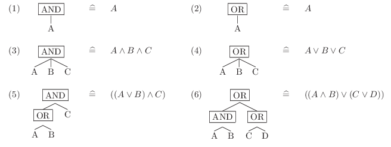

Device filter |
Top Previous Next |
|
A device filter is a logical expression that can be applied to the devices managed by the Client Service to filter for a subset of these devices. A device filter is a Boolean expression tree consisting of logical operators and instances of device filter term types. As the end user can freely define device filter consisting of these building blocks they are an extremely versatile and powerful way of device filtering and/or searching. shows examples of Boolean expression trees and their equivalent as logical expression. Note that the expression tree implicitly defines operator precedence.  Figure 1: Device filter expreesion tree examples. |